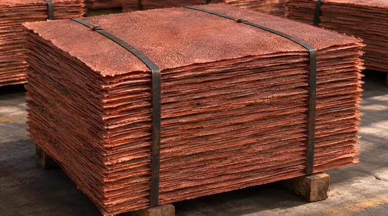

Катоды
Электролитическая медь марки М00к. В спецификации указан ГОСТ 546-2001.
9 позиций
Многократный электролиз и финишная вакуумная плавка. Состав партии сверяется по протоколу анализа.
Медь испаряют и конденсируют в инертном газе или вакууме.
Катодные листы получают электролитическим рафинированием с осаждением на металлические матрицы.
Зонная плавка рафинированных заготовок. Показатель чистоты относится к спецификации.
Зонная плавка рафинированных заготовок. Показатель чистоты относится к спецификации.
Металлический вольфрам для металлургических целей.
Длина на единицу массы уточняется для конкретной партии.
Длина на единицу массы уточняется для конкретной партии.
Расчётная чистота указана по сумме примесей Cu, Fe, Pb, Sb и Bi.
По этому запросу позиций нет.
| Форма поставки | Показатель в спецификации |
|---|---|
| Медный слиток | 99,9999% по перечисленным примесям |
| Ультрадисперсный порошок | 99,9999% по перечисленным примесям |
| Катод М00к | 99,99% Cu |
Это показатели предварительной спецификации. Состав конкретной партии подтверждается протоколом анализа.

Электролитическая медь марки М00к. В спецификации указан ГОСТ 546-2001.

Алюминий — круглые и полукруглые слитки массой 2,5–6 кг. Вольфрам — металлический штабик.

Никель НП1 и НП2, золото. Для представленных позиций диаметр составляет 0,025 мм.